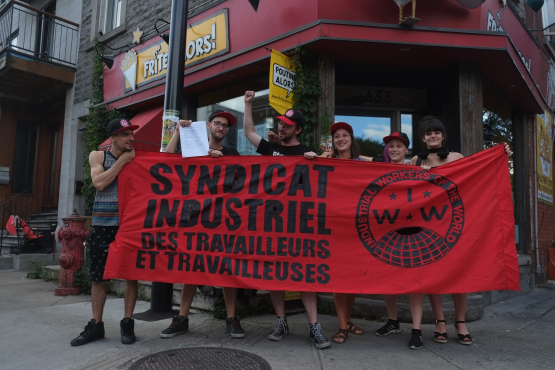

IWW Newswire: 2016-6
Submitted on Wed, 08/31/2016 - 8:28pm
Compiled by x344543 - August 31, 2016
The following news items are culled from various other IWW (and other) internet news portals:
IWW 2016 Organizing Summit:
- IWW members: Register Now for the 2016 Organizing Summit, October 8-9, Oakland, California - The 2016 Organizing Summit will bring together the organisers from the IWW’s organizing campaigns to share best practices, identify obstacles to higher effectiveness in the class war, and to mobilize the broader membership in North America behind a set of goals for building a bigger, better, and lasting revolutionary movement of the working class.
IWW Organizing:
- IGDCAST: Raising Hell in the South - IWW Member Brianna Dobbs, It's Going Down, August 29, 2016
- Les employé.es du Frite Alors Rachel se syndiquent avec les IWW - By SITT-IWW, Syndicat Industriel Des Travailleuses et Des Travailleurs, August 27, 2016
- A Manhattan Diner’s New Management Has Servers Singing a Defiant Tune - By Sarah Maslin Nir, New York Times, August 26, 2016; [related]: Servers at Ellen's Stardust Diner Have Unionized Due to Claims of Poor Working Conditions - By Aimée Lutkin, Jezebel, August 30, 2016 | Singing Waiters Organize Against Alleged Unfair Treatment at Ellen's Stardust Diner - By staff, Broadway World, August 29, 2016
- Spreading the Strike: Solidarity Actions Across North America for September 9th - By staff, It's Going Down, August 16, 2016; [related]: Call for International Anarchist Action in Solidarity with US Prison Strike - By staff, Contra Info, August 26, 2016 | Incarcerated workers strike September 9 - By Viola Wilkins, IWW AU, August 19, 2016 | INSTITUTE INDEX: A strike at the heart of the prison-industrial complex - By Sue Sturgis, Facing South, August 17, 2016 | A Challenge: Spread the Strike to Every Jail, Juvie, and Prison! - By staff, It's Going Down, August 11, 2016 | Durham: IWW stands with Striking Prisoners! - By staff, It's Going Down, August 11, 2016 | Why we’re about the see the largest prison strike in history - By Jeremy Galloway, RawStory, August 11, 2016 | Atlanta: Noise Demo in Solidarity With Prison Rebels - By staff, It's Going Down, August 9, 2016
- Bristol IWW just Keeps on Winning! - By staff, Bristol IWW, August 1, 2016
Members' Stories:
- Babe Alert: Deep Roots Jessica - By bluebabe1976, Out of the Mouths of Babes, August 13, 2016
- Wobchat #2: Bristol IWW - By staff, New Syndicalist, July 27, 2016
More News:
- Retour sur la soirée d’introduction au SITT-IWW - By SITT-IWW, Syndicat Industriel Des Travailleuses et Des Travailleurs, August 31, 2016
- LE DÉNOMBREMENT - By SITT-IWW, Syndicat Industriel Des Travailleuses et Des Travailleurs, August 24, 2016
- IGDCAST: #MilwaukeeUprising - By staff, It's Going Down, August 15, 2016
- Sept mythes à propos de Postes Canada - By SITT-IWW, Syndicat Industriel Des Travailleuses et Des Travailleurs, August 15, 2016
- La lutte pour les centres d’éducation populaire - By SITT-IWW, Syndicat Industriel Des Travailleuses et Des Travailleurs, August 10, 2016
- Solidaire des arrêté-e-s de la Loi Travail - By SITT-IWW, Syndicat Industriel Des Travailleuses et Des Travailleurs, August 4, 2016
- We watched angry activists release thousands of bugs in a busy London restaurant - By Michael Segalov, Huck Magazine, July 30, 2016
- C’est un drôle de milieu de travail, que celui du communautaire - By SITT-IWW, Syndicat Industriel Des Travailleuses et Des Travailleurs, July 27, 2016
- Ce n’est pas facile d’être une femme organisatrice - By SITT-IWW, Syndicat Industriel Des Travailleuses et Des Travailleurs, July 25, 2016
SoapBox:
- What does a union mean to you? #2 - By staff, New Syndicalist, August 17, 2016
IWW History:
- Workers' Opposition - Posted by Juan Conatz, Libcom.Org, August 6, 2016
- The Bisbee deportation of 1917 - Posted by Steven, Libcom.Org, August 1, 2016
- Solidarity forever: an oral history of the IWW: Stewart Bird, Dan Georgakas and Deborah Shaffer - Posted by Steven, Libcom.Org, July 30, 2016
- The Marine Worker - Posted by Juan Conatz, Libcom.Org, July 22, 2016